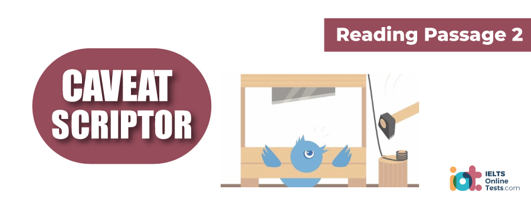

Part 1
READING PASSAGE 1
You should spend about 20 minutes on Questions 1-13, which are based on Reading Passage 1 below.

UNDOING OUR EMOTIONS
A. Three generations ago, 180 young women wrote essays describing why they wanted to join a convent (a religious community of nuns). Years later, a team of psychological researchers came across these autobiographies in the convent’s archives. The researchers were seeking material to confirm earlier studies hinting at a link between having a good vocabulary in youth and a low risk of Alzheimer’s disease in old age. What they found was even more amazing. The researchers found that, although the young women were in their early twenties when they wrote their essays, the emotions expressed in these writings were predictive of how long they would live: those with upbeat autobiographies lived more than ten years longer than those whose language was more neutral. Deborah Danner, a psychologist at the University of Kentucky who spearheaded the study, noted that the results were particularly striking because all members of the convent lived similar lifestyles, eliminating many variables that normally make it difficult to interpret longevity studies. It was a phenomenal finding’, she says. ‘A researcher gets a finding like that maybe once in a lifetime.’ However, she points out that no one has been able to determine why positive emotions might have such life-extending effects.
B. Barbara Fredrickson, Professor of Psychology at the University of Michigan, believes that part of the answer is the ‘undo effect’. According to this theory, positive emotions help you live longer by shutting down the effects of negative ones. Fredrickson’s theory begins with the observation that negative emotions, like fear and stress, enhance our flight-or-fight response to very real threats. However, even when the emergency is gone, negative emotions produce lingering effects. Brooks Gump, a stress researcher at the State University of New York, explains that one of these effects is excessive cardiovascular reactivity. Behaviourally, Gump says, this reactivity is related to excessive vigilance: the state of being constantly on guard for potential dangers. Not only is it physically draining to live in a perpetual state of high vigilance, but high cardiovascular reactivity could be linked to increased chances of a heart attack.
C. Fredrickson believes positive emotions work their magic by producing a rapid unwinding of pent-up tension, restoring the system to normal. People who quickly bounce back from stress often speed the process by harnessing such emotions as amusement, interest, excitement, and happiness, she says. To test her theory, Fredrickson told a group of student volunteers that they had only a few minutes to prepare a speech that would be critiqued by experts. After letting the students get nervous about that, Fredrickson then told them they wouldn’t actually have to deliver their speeches. She monitored heart rates and blood pressure. Not surprisingly, all students got nervous about their speeches, but those who viewed the experiment with good-humored excitement saw their heart rates return to normal much more quickly than those who were angry about being fooled. In a second experiment, Fredrickson reported that even those who normally were slow to bounce back could be coached to recover more quickly by being told to view the experiment as a challenge, rather than a threat.
D. Fredrickson believes that positive emotions make people more flexible and creative. Negative emotions, she says, give a heightened sense of detail that makes us hypersensitive to minute clues related to the source of a threat. But that also produces ‘tunnel vision’ in which we ignore anything unrelated to the danger. Fredrickson speculated that just as positive emotions can undo the cardiovascular effects of negative ones, they may also reverse the attention-narrowing effects of negative feelings: broadening our perspectives.
E. To verify her theory, Fredrickson showed a group of students some film clips- some saw frightening clips, some saw humorous ones or peaceful ones. They then did a matching test in which they were shown a simple drawing and asked which of two other drawings it most resembled. The drawings were designed so that people would tend to give one answer if they focused on details, and another answer if they focused on the big picture. The results confirmed Fredrickson’s suspicion that positive emotions affect our perceptions. Students who had seen the humorous or peaceful clips were more likely to match objects according to broad impressions.
F. This fits with the role that positive emotions might have played in early human tribes, Fredrickson says. Negative emotions provided focus, which was important for surviving in life-or-death situations, but the ability to feel positive emotions was of long-term value because it opened the mind to new ideas. Humour is a good example of this. She says: ‘The emotions are transient, but the resources are durable. If you building a friendship through being playful, that friendship is a lasting resource.’ So while the good feelings may pass, the friendship remains. On an individual level, Fredrickson’s theory also says that taking time to do things that make you feel happy isn’t simply self-indulgent. Not only are these emotions good for the individual, but they are also good for society.
G. Other researchers are intrigued by Fredrickson’s findings. Susan Folkman, of the University of California, has spent two decades studying how people cope with long-term stresses such as bereavement, or caring for a chronically ill child. Contrary to what one might expect, she says, these people frequently experience positive emotions. ‘These emotions aren’t there by accident’, she adds. ‘Mother Nature doesn’t work that way, I think that they give a person time out from the intense stress to restore their resources and keep going. This is very consistent with Fredrickson’s work.’
Part 2
READING PASSAGE 2
You should spend about 20 minutes on Questions 14-27, which are based on Reading Passage 2 below.

Caveat Scriptor
Let the would-be writer beware! Anyone foolhardy enough to embark on a career as a writer – whether it be an academic treatise, a novel, or even an article – should first read this!
People think that writing as a profession is glamorous; that it is just about sitting down and churning out words on a page, or more likely these days on a computer screen. If only it were! So what exactly does writing a book entail? Being a writer is about managing a galaxy of contradictory feelings: elation, despair, hope, frustration, satisfaction and depression-and not all separately! Of course, it also involves carrying out detailed research: first to establish whether there is a market for the planned publication, and second what should be the content of the book. Sometimes, however, instinct takes the place of market research and the contents are dictated not by plans and exhaustive research, but by experience and knowledge.
Once the publication has been embarked upon, there is a long period of turmoil as the text takes shape. A first draft is rarely the final text of the book. Nearly all books are the result of countless hours of altering and re-ordering chunks of text and deleting the superfluous bits. While some people might think that with new’ technology the checking and editing process is sped up, the experienced writer would hardly agree. Unfortunately, advanced technology now allows the writer the luxury of countless editing’s; a temptation many writers find hard to resist. So a passage, endlessly re-worked may end up nothing remotely like the original, and completely out of place when compared with the rest of the text.
After the trauma of self-editing and looking for howlers, it is time to show the text to other people, friends perhaps, for appraisal. At this stage, it is not wise to send it off to a literary agent or direct to publishers, as it may need further fine-tuning of which the author is unaware. Once an agent has been approached and has rejected a draft publication, it is difficult to go and ask for the re vamped text to be considered again. It also helps, at this stage, to offer a synopsis of the book, if it is a novel, or an outline if it is a textbook. This acts as a guide for the author, and a general reference for friends and later for agents.
Although it is tempting to send the draft to every possible agent at one time, it is probably unwise. Some agents may reject the publication out of hand, but others may proffer some invaluable advice, for example about content or the direction to be taken, information such as this may be of use in finally being given a contract by an agent or publisher.
The lucky few taken on by publishers or agents, then have their books subjected to a number of readers, whose job it is to vet a book: deciding whether it is worth publishing and whether the text as it stands is acceptable or not. After a book has finally been accepted by a publisher, one of the greatest difficulties for the writer lies in taking on board the publisher’s alterations to the text. Whilst the overall story and thrust of the book may be acceptable, it will probably have to conform to an in-house style, as regards language, spelling and punctuation. More seriously, the integrity of the text may be challenged, and this may require radical re-drafting which is usually unpalatable to the author. A books creation period is complex and unnerving, but the publisher’s reworkings and text amputations can also be a tortuous process.
For many writers, the most painful period comes when the text has been accepted, and the writer is wailing for it to be put together for the printer. By this stage, it is not uncommon for the writer to be thoroughly sick of the text.
Abandon writing? Nonsense. Once smitten, it is not easy to escape the compulsion to create and write, despite the roller-coaster ride of contradictory emotions.
Part 3
READING PASSAGE 3
You should spend about 20 minutes on Questions 27-40, which are based on Reading Passage 3 below.

Pronunciation and physiognomy
Imagine the scene: you are sitting on the tube and on gets someone you instinctively feel is American. To make sure you ask them the time, and arc fight, but how did you know?
When we say someone ‘looks American’, we take into consideration dress, mannerism and physical appearance. However, since the Americans do not constitute one single race, what exactly is meant by ‘look’? In fact, one salient feature is a pronounced widening around the jaw – a well-documented phenomenon.
Writer Arthur Koestler once remarked that friends of his, whom he had met thirty years after they emigrated to the United States, had acquired an ‘American physiognomy’, i.e. a broadened jaw, an appearance which is also prevalent in the indigenous population. An anthropologist friend of his attributed this to the increased use of the jaw musculature in American enunciation. This ‘change of countenance’ in immigrants had already been observed by the historian M. Fishberg in 1910.
To paraphrase the philosopher Emerson, certain national, social and religious groups, such as ageing actors, long-term convicts and celibate priests, to give just a few examples, develop a distinguishing ‘look’, which is not easily defined, but readily recognised. Their way of life affects their facial expression and physical features, giving the mistaken impression that these traits are of hereditary or ‘racial’ origin. All the factors mentioned above contribute, as well as heredity. But the question of appearance being affected by pronunciation – as in the case of American immigrant including those from other English speaking countries over the course of many years – is of great interest, and calls for further study into the science of voice production. This can only benefit those working in the field of speech therapy, elocution and the pronunciation of foreign languages, and help the student from a purely physiological point of view. Naturally, the numerous psychological and socio-linguistic factors that inhibit most adult learners of foreign languages from acquiring ‘good’ pronunciation constitute a completely different and no less important issue that require separate investigation.
The pronunciation of the various forms of English around the world today is affected by the voice being ‘placed’ in different, parts of the mouth. We use our Speech organs in certain ways to produce specific sounds, and these muscles have to practise to learn new phonemes. Non-Americans should look in the mirror while repeating ‘1 really never heard of poor reward for valour’ with full use of tile USA retroflex /r/ phoneme, and note what happens to their jawbones after three or four repetitions. Imagine the effect of these movements on the jaw muscles after twenty years! This phoneme is one of the most noticeable features of US English and one that non-Americans always exaggerate when mimicking the accent. Likewise, standard British RP is often parodied, and its whine of superiority mocked to the point of turning the end of one’s nose up as much as possible. Not only does this enhance the ‘performance’, but also begs the question of whether this look is the origin of the expression ‘stuck up’?
Once on a Birmingham bus, a friend pointed to a fellow passenger and said, ‘That man’s Brummie accent is written all over his face.’ This was from someone who would not normally make crass generalisations. The interesting thing would be to establish whether thin lips and a tense, prominent chin are a result of the way Midlands English is spoken, or its cause, or a mixture of both. Similarly, in the case of Liverpool one could ask whether the distinctive ‘Scouse accent was a reason for, or the frequency of high cheekbones in the local population.
When one learns another accent, as in the theatre for example, voice coaches often resort to images to help their students acquire the distinctive sound of the target pronunciation. With ‘Scouse’, the mental aid employed is pushing your cheekbones up in a smile as high as they will go and you have got a very slack mouth full of cotton wool. The sound seems to spring off die sides of your face-outwards and upwards. For a Belfast accent, one has to tighten the sides of the jaws until there is maximum tension, and speak opening the lips as little as possible, This gives rise to the well-known ‘Ulster jaw’ phenomenon. Learning Australian involves imagining the ordeals of the first westerners transported to the other side of the world. When exposed to the merciless glare and unremitting heat of the southern sun, we instinctively screw up our eyes and grimace for protection.
Has this contributed to an Australian ‘look’, and affected the way ‘Aussies’ speak English, or vice versa? It is a curious chicken and egg conundrum, but perhaps the answer is ultimately irrelevant Of course other factors affect the way people look and sound, and it would certainly be inaccurate to suggest that all those who speak one form of a language or dialect have a set physiognomy because of their pronunciation patterns. But a large enough number do, and that alone is worth investigating. What is important, however, is establishing pronunciation as one of the factors that determine physiognomy, and gaining a deeper insight into the origins and nature of the sounds of speech And of course, one wonders what ‘look’ one’s own group has!
Part 1
Questions 1-6
Reading Passage has seven sections, A-G.
Which section contains the following information?
Write the correct letter, A-G, in boxes 1-6 on your answer sheet.
NB You may use any letter more than once.
1.
2.
3.
4.
5.
6.
Questions 7-10
Look at the following statements (Questions 7-10) and the list of researchers below.
Match each statement with the correct researcher, A-D.
Write the correct letter, A-D, in boxes 7-10 on your answer sheet.
NB You may use any letter more than once.
| List of Researchers | ||
| A. | Deborah Danner | |
| B. | Barbara Fredrickson | |
| C. | Brooks Gump | |
| D. | Susan Folkman | |
7.
8.
9.
10.
Questions 11-13
Complete the sentences below.
Choose ONE WORD ONLY from the passage for each answer.
Write your answers in boxes 11-13 on your answer sheet.
In early tribes, negative emotions gave humans the 11 that they needed to deal with emergencies.
Fredrickson believes that a passing positive emotion can lead to an enduring asset such as a 12 , which is useful in times to come.
Fredrickson also believes that both individuals and 13 benefit from positive emotions.
Part 2
Questions 14-21
Complete the summary below using words from the box.
Write your answers in boxes 14-21 on your answer sheet.
| editing process | beware | first draft | glamour | a literary agent |
| alterations | profession | publisher | challenges | writing |
| dictating | research | publishing | summary | ups and downs |
| roller-coaster | readers |
Questions 22-23
Choose the correct letter A, B, C or D.
Write your answers in boxes 22-23 on your answer sheet.
Questions 24-27
Complete the sentences below with words taken from Reading Passage 2.
Use NO MORE THAN THREE WORDS for each answer.
Write your answers in boxes 24-27 on your answer sheet.
Once a text is finished, the writer needs to get the 24 of other people.
Some agents may reject the draft of a book, while others may offer 25
Apart from the need for a draft to conform to an in-house style, a publisher’s changes to a text may include 26
The publisher’s alterations to a book are difficult for a writer, as is the 27 as the book grows.
Part 3
Questions 28-30
Look at the following people (Questions 28-30) and the list of statements below.
Match each person with the correct statement.
Write the correct letter A-G in boxes 28-30 on your answer sheet.
28.
29.
30.
| A. | Americans use their jaw more to enunciate | |
| B. | immigrants acquire physiognomical features common among the indigenous population | |
| C. | facial expression and physical features are hereditary | |
| D. | lifestyle affects physiognomy | |
| E. | Americans have a broadened jaw | |
| F. | His friends appearance had changed since they moved to the United States. | |
| G. | the change of countenance was unremarkable |
Questions 31-36
Do the following statements reflect the claims of the writer in Reading Passage 3?
In boxes 31-36 on your answer sheet write
| YES. | if the statement agrees with the views of the writer | |
| NO. | if the statement contradicts the views of the writer | |
| NOT GIVEN. | if it is impossible to say what the writer thinks about this |
31.
32.
33.
34.
35.
36.
Questions 37-40
Complete each of the following statements (Questions 37-40) with the best ending A-I from the box below.
Write the appropriate letters A-I in boxes 37-40 on your answer sheet
37.
38.
39.
40.
| A. | can be achieved by using a mental aid. | |
| B. | is irrelevant. | |
| C. | is worth investigating. | |
| D. | use images to assist students with the desired pronunciation. | |
| E. | is a chicken and egg conundrum. | |
| F. | get the target. | |
| G. | can affect appearance. | |
| H. | is not as easy as a Belfast one. | |
| I. | makes you smile. |